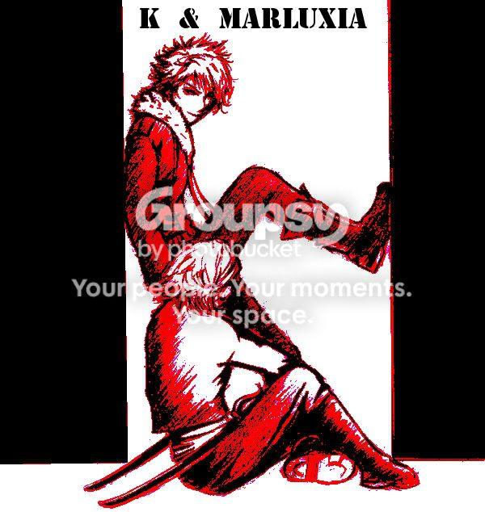

โห ไม่ได้เข้ามาดูนาน งานเพิ่มขึ้นเยอะเรยก๊ะ *0*
วาดสวยๆกันทั้งนั้นเรยค่ะ อร้ากกกกก อิจฉาเว้ TAT
แปะมั่งดิ เด๋วเค้าหาว่ามาเนียนปั้มเรป (จริงๆมันก็แบบนั้นนี่หว่าเอ็งอ่ะ)
Character Action จากโปรเจ็คเกมงับ ช่วงนี้ปั่นแต่โปรเจ็ค ไม่ได้วาดรูปเล้ย
เชนทร์1
เชนทร์2
เอม1
เอม2
ลีโอ1
ลีโอ2
เทียร่า1
เทียร่า2
วาร์ป1
วาร์ป2
คัดจ์1
คัดจ์2
ไปละงิ วันหลังมาเนี่ยนใหม่ *w*
http://eco.froztic.in.th/archive/ecofanclub/
กระทู้ [FC]~FanArt Collection~ วาดได้ตามใจฉัน
http://eco.froztic.in.th/archive/ecofanclub/viewtopic.php?f=21&t=1294
หน้า 137 จากทั้งหมด 143


คิดถึงROเหมือนกันฮะ TwT
ไม่รู้ว่าตอนนี้จะมีบอทเป็นกี่เท่าของตอนที่ผมเลิกเล่น...
อั๊ยยยย์♥
คู~♥♥♥
(นอกเรื่องนิด - ปังย่า Kaz จับใส่ชุดบาร์เทนเดอร์ ใส่วิก ย้อมผมดำ แล้วให้อารมณ์เหมือนโทยะ อากิระ ใส่ชุดบาร์เทนเดอร์เลยล่ะ อุกรี๊ดดดด~ ถ้าผมไม่เลิกเล่นเพราะโปรติดปัง ป่านนี้ก็คงซื้อมาเล่นแล้วอ่ะ)
ชอบวิธีจัดท่าของท่านNateeมากเลยอ่ะ XD
ไม่รู้ว่าตอนนี้จะมีบอทเป็นกี่เท่าของตอนที่ผมเลิกเล่น...
อั๊ยยยย์♥
คู~♥♥♥
(นอกเรื่องนิด - ปังย่า Kaz จับใส่ชุดบาร์เทนเดอร์ ใส่วิก ย้อมผมดำ แล้วให้อารมณ์เหมือนโทยะ อากิระ ใส่ชุดบาร์เทนเดอร์เลยล่ะ อุกรี๊ดดดด~ ถ้าผมไม่เลิกเล่นเพราะโปรติดปัง ป่านนี้ก็คงซื้อมาเล่นแล้วอ่ะ)
ชอบวิธีจัดท่าของท่านNateeมากเลยอ่ะ XD
*0*
แง้
คุณ natee แกล้งผมอีกแล้วอ่ะ
ไม่สงสารเรามั่งเลย(เนต 56เค อย่างเราน้อยใจตายยย)
งานคุณ Marluxia สวยมักมาก (สองผมลงงานแบบนี้มั่งดิ)
งานคุน ~PHANTOM~ ก้อด้วยย (สอนผมมั่ง ><")
และขอบคุณสำหรับคำชมนะคับ จะได้มีกะลังใจทำงานต่อไป อิอิ
ฝันดีทุกท่านคับบ
แง้
คุณ natee แกล้งผมอีกแล้วอ่ะ
ไม่สงสารเรามั่งเลย(เนต 56เค อย่างเราน้อยใจตายยย)
งานคุณ Marluxia สวยมักมาก (สองผมลงงานแบบนี้มั่งดิ)
งานคุน ~PHANTOM~ ก้อด้วยย (สอนผมมั่ง ><")
และขอบคุณสำหรับคำชมนะคับ จะได้มีกะลังใจทำงานต่อไป อิอิ
ฝันดีทุกท่านคับบ
โอ้โห แต่ละคน*0* ช่วงนี้มีไฟกันสินะ เอิ๊กๆ สวยคับ Natee ลายเส้นออกแนว ชาแมนคิง เลยแหะ ของคุณบลัดแมรี่เคยเข้าไปดูหลายทีแว้ว แจ่มดี ว่าแต่ มะไหร่จะเสร็จอ่า อยากดู*3*
ยินด้วยด้วย กับการลงสีโฟโต้ชอปนะ แฟนท่อมม ของคุณMarluxia ใช้โปรแกรมไรอะ สวยดี อยากลองศึกษามั่ง
ไอ้เราไม่มีรูปมาแปะกะเขาเล้ย55-*- ติดสอบ เซ็งจริงๆ-..-
รบกวน บอกชื่อเล่นกันหน่อยสิ เรียกลำบาก-*- ผมออฟนะ
ยินด้วยด้วย กับการลงสีโฟโต้ชอปนะ แฟนท่อมม ของคุณMarluxia ใช้โปรแกรมไรอะ สวยดี อยากลองศึกษามั่ง
ไอ้เราไม่มีรูปมาแปะกะเขาเล้ย55-*- ติดสอบ เซ็งจริงๆ-..-
รบกวน บอกชื่อเล่นกันหน่อยสิ เรียกลำบาก-*- ผมออฟนะ
ผมใช้โปรแกรม โฟโต้ช็อปลงสีครับ ส่วนพวก BG ในภาพนั้น
เอาพวกภาพอาร์ทเวิร์คและสถานที่ต่างๆมาดัดโทนสีเปลี่ยนอะไรนิดหน่อยแล้วแปะลงไปครับ 8)
รูปนี้ไม่เกี่ยวกับ ECO ครับ วาดตอนคริสมาสเพราะความรั่ว :lol:

ตอบคุณ MeawnaM
ผมไม่รู้จะสอนยังไง ขอแค่แนะนำละกันครับ
การที่เราชอบสไตล์ลายเส้นและการลงสีการ์ตูนแบบไหนก็ตาม จะมีผลกับสไตล์งานที่ออกมามาก
ขั้นแรกเลยควรหาลายเส้นการ์ตูนที่ชอบจริงๆก่อนนะครับ แล้วลองวาดตามดู จะเอาเหมือนหรือดัดแปลงเองก็แล้วแต่ครับ
ส่วนพวกวิธีการลงสี คุณ BloodyMarry ทำ How to ไว้ในแกลอรีของเค้าแล้ว
คลิกที่ลายเซนต์เค้าแล้วลองเข้าไปอ่านดู น่าจะช่วยได้เยอะเอาการครับ...
ปล. ผมชื่อคีย์
เอาพวกภาพอาร์ทเวิร์คและสถานที่ต่างๆมาดัดโทนสีเปลี่ยนอะไรนิดหน่อยแล้วแปะลงไปครับ 8)
รูปนี้ไม่เกี่ยวกับ ECO ครับ วาดตอนคริสมาสเพราะความรั่ว :lol:
ตอบคุณ MeawnaM
ผมไม่รู้จะสอนยังไง ขอแค่แนะนำละกันครับ
การที่เราชอบสไตล์ลายเส้นและการลงสีการ์ตูนแบบไหนก็ตาม จะมีผลกับสไตล์งานที่ออกมามาก
ขั้นแรกเลยควรหาลายเส้นการ์ตูนที่ชอบจริงๆก่อนนะครับ แล้วลองวาดตามดู จะเอาเหมือนหรือดัดแปลงเองก็แล้วแต่ครับ
ส่วนพวกวิธีการลงสี คุณ BloodyMarry ทำ How to ไว้ในแกลอรีของเค้าแล้ว
คลิกที่ลายเซนต์เค้าแล้วลองเข้าไปอ่านดู น่าจะช่วยได้เยอะเอาการครับ...
ปล. ผมชื่อคีย์
โอ้ ทำในโฟโต? เอ สีมันเนียนๆดี-0-
ยินดีที่ได้รู้จักครับ คีย์
ยินดีที่ได้รู้จักครับ คีย์
คุณMarluxia ลงสีเก่งจาง เด๋วปิดเทอมนี้ผมจา ฝึกบ้างละ >< อิอิ


โอ๊ะๆ Beater คราวนี้มาแบบเปลี่ยนแนวแฮะ... ปกติเห็นชอบแนวตาแป๋วโชตะนี่ครับ
เห้อ~~ อยากลองเล่นเมลตี้บลัด เห็นเพื่อนมันคุยๆกัน รู้ว่าออนไลน์ได้ด้วยยิ่งอยากเล่น...
เลยนัดกับพี่ไว้ว่าให้เค้าไรท์ส่งให้ในงาน TGS แต่ลืมไปว่าเครื่องไม่มีไดร์ฟอ่าน DVD
เกมมัน 1 GB กว่าๆ คงมาแบบ DVD แหงแซะ...
สงสัยต้องตามหาโหลดเอาเองชัวร์ๆ... :cry:
แปะ 1 รูป วาดแรเงา + เล่นเลเยอร์ ค่อนข้างเละเทะ
เห้อ~~ อยากลองเล่นเมลตี้บลัด เห็นเพื่อนมันคุยๆกัน รู้ว่าออนไลน์ได้ด้วยยิ่งอยากเล่น...
เลยนัดกับพี่ไว้ว่าให้เค้าไรท์ส่งให้ในงาน TGS แต่ลืมไปว่าเครื่องไม่มีไดร์ฟอ่าน DVD
เกมมัน 1 GB กว่าๆ คงมาแบบ DVD แหงแซะ...
สงสัยต้องตามหาโหลดเอาเองชัวร์ๆ... :cry:
แปะ 1 รูป วาดแรเงา + เล่นเลเยอร์ ค่อนข้างเละเทะ


กรี๊ดดดดดดดด ชอบภาพนี้มากๆค่าาาาาา
Marluxia เขียน:โอ๊ะๆ Beater คราวนี้มาแบบเปลี่ยนแนวแฮะ... ปกติเห็นชอบแนวตาแป๋วโชตะนี่ครับ
เห้อ~~ อยากลองเล่นเมลตี้บลัด เห็นเพื่อนมันคุยๆกัน รู้ว่าออนไลน์ได้ด้วยยิ่งอยากเล่น...
เลยนัดกับพี่ไว้ว่าให้เค้าไรท์ส่งให้ในงาน TGS แต่ลืมไปว่าเครื่องไม่มีไดร์ฟอ่าน DVD
เกมมัน 1 GB กว่าๆ คงมาแบบ DVD แหงแซะ...
สงสัยต้องตามหาโหลดเอาเองชัวร์ๆ... :cry:
แปะ 1 รูป วาดแรเงา + เล่นเลเยอร์ ค่อนข้างเละเทะ
http://i110.photobucket.com/albums/n115 ... Pirate.jpg
อารมณืภาพเท่ดีจังเลยอ่ะ